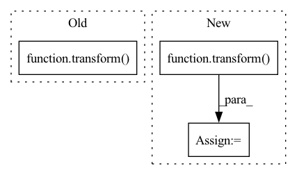

Pattern ID :33672
Before Change
hue = self.sample_uniform(*self.hue_range).item()
transform = ColorJitter(brightness=brightness, contrast=contrast, saturation=saturation, hue=hue)
for _, image in self.get_images_dict(subject).items():
image.set_data(transform( image.data) )
return subject
After Change
// add a shell batch dimension
temp = temp.unsqueeze(0)
// apply transform
temp = transform( temp)
// remove shell batch dimension
temp = temp.squeeze(0)
// add last dimension to bring image back to original shape
temp = temp.unsqueeze(-1)
image.set_data(temp)In pattern: SUPERPATTERN
Frequency: 4
Non-data size: 3
Instances Fragment ID: 96914438
Project Name: cbica/gandlf
Commit Name: b4e565cb6d71fac3ae12002da7db121a3ecfcdea
Time: 2021-10-06
Author: sarthak.pati@hotmail.com
File Name: GANDLF/data/augmentation/rgb_augs.py
M Class Name: RandomColorJitter
N Class Name: RandomColorJitter
M Method Name: apply_transform(2)
N Method Name: apply_transform(2)
M Parent Class: IntensityTransform,RandomTransform
N Parent Class: IntensityTransform,RandomTransform
M File Name: GANDLF/data/augmentation/rgb_augs.py
N File Name: GANDLF/data/augmentation/rgb_augs.py
M Start Line: 52
M End Line: 53
N Start Line: 60
N End Line: 77
Before Change
return sample
valid_sample = {key: value for (key, value) in sample.items() if key in self.__valid_transform_params}
new_sample = transform(**valid_sample)
return new_sample
def _read_image(self, image_path: str) -> np.ndarray:
full_image_path = self.data_folder / image_pathAfter Change
if transform is None:
return sample
new_sample = transform(**sample)
return new_sample
def _read_image(self, image_path: str) -> np.ndarray:
full_image_path = self.data_folder / image_path Fragment ID: 96914422
Project Name: eora-ai/torchok
Commit Name: 7ddd9949e3f0a51b281c1687ebde9427d716dda2
Time: 2022-04-11
Author: patr982@gmail.com
File Name: src/data/datasets/base.py
M Class Name: ImageDataset
N Class Name: ImageDataset
M Method Name: _apply_transform(3)
N Method Name: _apply_transform(3)
M Parent Class: ABC,Dataset
N Parent Class: ABC,Dataset
M File Name: src/data/datasets/base.py
N File Name: src/data/datasets/base.py
M Start Line: 59
M End Line: 60
N Start Line: 57
N End Line: 57
Before Change
else:
new_sample[source] = sample[source]
new_sample = transform(**new_sample)
// inverse mapping
for source, target in self.transform_targets.items():
if target in new_sample and (source == "input" or source == "target"):
sample[source] = new_sample[target]After Change
return sample
valid_sample = {key: value for (key, value) in sample.items() if key in self.__valid_transform_params}
new_sample = transform(**valid_sample)
return new_sample
def _read_image(self, image_path: str) -> np.ndarray:
full_image_path = self.data_folder / image_path Fragment ID: 96914426
Project Name: eora-ai/torchok
Commit Name: 8eed040a824ef97af24c29a4106f0457205bc490
Time: 2022-04-11
Author: patr982@gmail.com
File Name: src/data/datasets/base.py
M Class Name: ImageDataset
N Class Name: ImageDataset
M Method Name: _apply_transform(3)
N Method Name: _apply_transform(3)
M Parent Class: ABC,Dataset
N Parent Class: ABC,Dataset
M File Name: src/data/datasets/base.py
N File Name: src/data/datasets/base.py
M Start Line: 67
M End Line: 83
N Start Line: 59
N End Line: 61